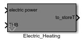
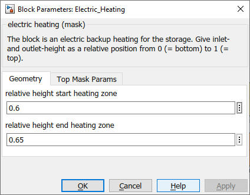

Electric_Heating
Path: CARNOT/Storage/Thermal/Storage_Ports
Purpose
This block is an electric back-up heating for the storage.
Description
This block is a is an electric back-up heating of the
storage. You have to specify the inlet and outlet height as relative positions
in the storage in order to define the position of the back-up heating. When
creating connections, copy the block (pipe, heat exchanger or electric heating) and connect the THVin and THVout to in- and outports. Then
connect "from store" and "to store" to "port n"
and "[T p] n" of the multiport storage block. Be sure that you use
the same port number for the entering and exiting flow. The block transforms
the incoming THV from a pipe or a pump to a vector which the storage interprets
as heat exchanger.
Inputs:
Outputs:
Parameters and Dialog Box

The parameter "Number of nodes" is set by the top mask of the storage model. The variable nodes must not be changed!
Characteristics
Direct Feedthrough Yes
Sample
time
Inherited
from driving block
Vectorized
No